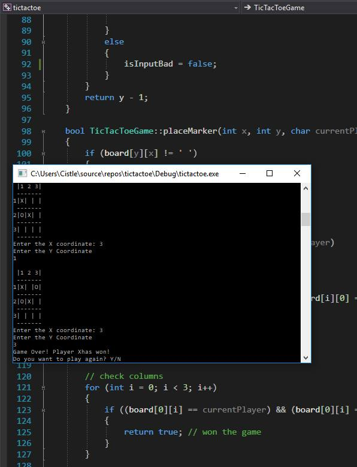
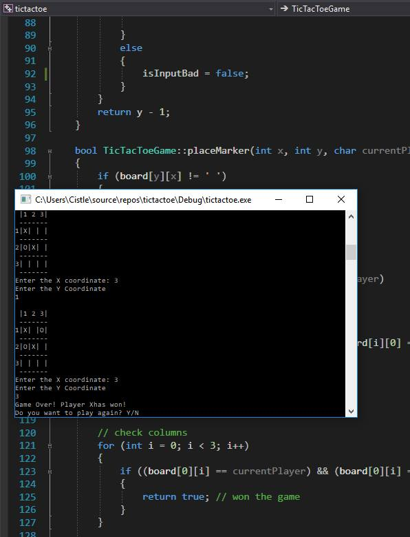

Creative Stuff
A summary of creative things
In my spare time, I like to experiment with different languages and online tutorials.
I have created a few smaller things in my spare time including a text-based Tic Tac Toe game, a 2D collecting game (similar to Snake), and a sensor-activated robot.
I received a subscription box from Robobox and created a sensor-activated robot with Arduino. The kit included 3D printed parts, electronic circuits, and instructions. I had to connect wires and write the code for it it work. It was coded in C# and I was successful at making the alarm go off when I waved my hand in front of it. It was fun! This is a field I have a strong interest in and want to explore more in-depth.
YouTube is a great source for tutorials. I have followed along with some tutorials to create text-based games in C++ like Tic Tac Toe, a knock-off of "Snake", and a very basic adventure ASCII game with the player battling against monsters using a random number generator to determine attack and defense.
The adventure ASCII game is about as basic as it can get for an adventure game. There is a text map and the player is shown by the "@" character. Other letters on the screen are various monsters. Walls are created using the "#" symbol. For fun, I wrote out my last name under the map. It doesn't have any applicable purpose for the game itself. Each dot is a space that the user is able to move to using the keyboard arrows. When approached with a monster, a random number generator involves a loop to determine if the player is successful or not.
Tic Tac Toe is also very basic. The player inputs the x and y coordinates for the grid and it displays on the screen. Another player sitting next to the first player "in real life" will also use the keyboard to enter their own coordinates.
Some images below show the text-based games. It allowed me to get more familiar with C++ and the logic involved in programming. Although it isn't exactly relevant to web design and development, the act of paying attention to detail, testing and checking, and keeping organized to make the parts and the whole work together are still key concepts.
 
